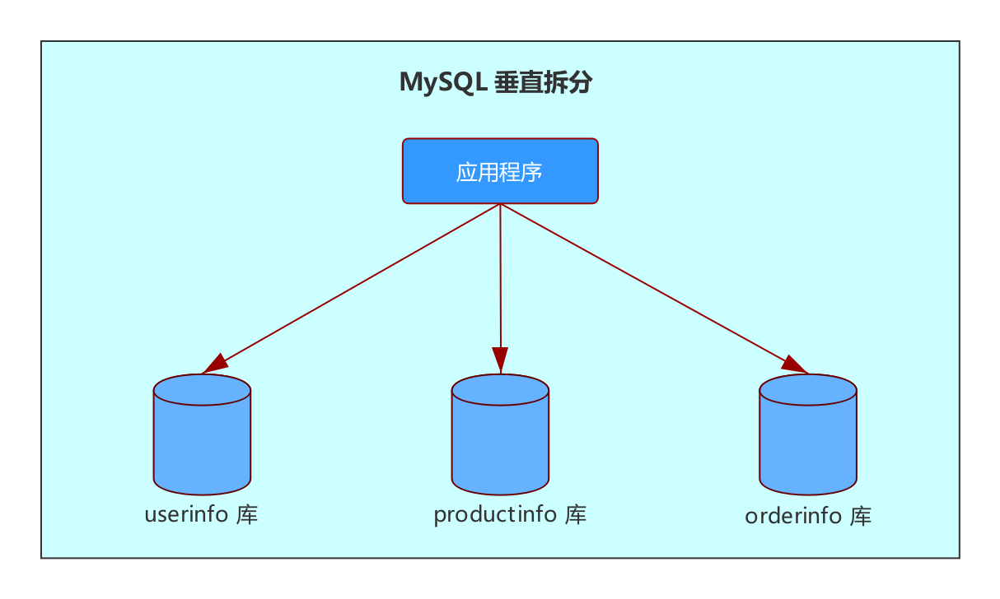
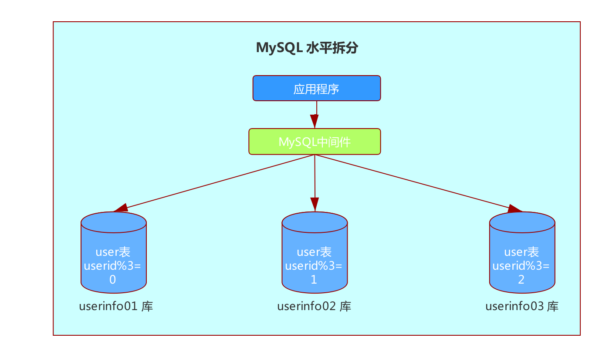

使用数据库时，我们经常会聊到分库分表，那么分库分表有哪些方式？什么情况应该考虑分库分表呢？这次我们来看下这些问题。
MySQL 分库分表是指：把 MySQL 数据库物理地拆分到多个实例或者机器上去。从而降低单台 MySQL 实例的负载。那么这里讲的拆分究竟以什么方式实现的呢？这里就先来看看 MySQL 分库分表的拆分方法：
MySQL 分库分表拆分方法
MySQL 分库分表拆分方法分为：垂直拆分和水平拆分。
垂直拆分
垂直拆分一般是指下面几种情况：
- 有多个业务，每个业务单独分到一个实例里面。
- 在一个实例中有多个库，把这些库分别放到单独的实例中。
- 在一个库中存在过多的表，把这些表拆分到多个库中。
- 把字段过多的表拆分成多个表，每张表包含一部分字段。
比如一个电商网站，他的用户信息（userinfo）、商品信息（productinfo）、订单信息（orderinfo) 垂直拆分在三个实例中，如下图所示：

水平拆分
如果通过垂直拆分，表数据量仍然很大，那就可以考虑使用水平拆分了。
所谓水平拆分，就是把同一张表分为多张表结构相同的表，每张表里存储一部分数据。而拆分的算法也比较多，常见的就是取模、范围、和全局表等。
还是拿上面电商网站的例子，比如业务会考虑做一次活动，预计注册用户会暴涨。那么就应该考虑对用户表进行水平拆分了，如下图：

这里使用的是取模分片，用户 ID 对 3 取模，如果余数是 0，则数据存放在 userinfo01 库的 user 表中；如果余数是 1，则数据存放在 userinfo02 库的 user 表中；如果余数是 2，则数据存放在 userinfo03 库的 user 表中。
哪些情况需要考虑分库分表？
都在提分库分表，那么哪些情况应该考虑分库分表呢？这里总结了几个需要考虑分库分表的场景：
数据量过大，影响了运维操作
如果数据量比较大，其对数据库影响也会比较大，最常见的比如：影响备份、大表 DDL 导致主从长时间延迟等。下面仔细讲讲这两种情况：
备份：如果单张表或者单个实例数据量太大，那备份可能需要占用大量的 IO 和磁盘空间，并且持续时间还会比较久。曾经听说过有公司的单个实例的备份从凌晨持续到当天下午的情况，这种场景下，尽管在从库备份，如果开启了读写分离，对业务的影响也是比较大的。
DDL 导致主从长时间延迟：大表执行 DDL 不但会产生 MDL 写锁（MDL 的风险可以看前文），并且还会导致主从延迟。
直接执行大表 DDL，为什么会导致主从延迟？
原因是主库执行完 DDL 后，才会写入到 binlog 里，然后传输到从库执行，而又因为从库 SQL 线程是单线程的，因此，需要等到这条 DDL 在从库执行完成，其他事务才能继续执行，而从库执行 DDL 这段时间，主从都是延迟的。
把修改频繁的字段拆分出来
比如电商业务场景的用户表，这张表可能包含了用户唯一标识 ID，用户名，昵称，联系方式，性别，出生日期，注册时间，积分等等。这些字段中，其实也只有积分会变更的比较频繁，因此可以把积分字段独立出来，然后加上用户唯一标识 ID。这样，用户表的更新次数就大大降低了。
把大字段拆分出去
比如电商业务的商品表，表里可能包含了商品的价格，生产日期，产地，供应商，商品详情和使用说明等。我们会发现商品详情和使用说明的字段特别大，可能字段类型需要配置成 text 或 blob，类似的字段占用的磁盘空间也是比较大。维护起来会比较麻烦，因此这种情况下，建议把这类大字段水平拆分出来。
增长比较快的
还是拿电商业务举例，比如订单表，如果预估未来增长速度会比较快，那么可以考虑提前对订单表进行分库分表。防止单表增长过快。
降低不同库或者表的相互影响
电商业务会涉及多个模块，比如会员，订单，库存等。比如搞了一个活动，扫码送会员积分，如果会员相关的表和订单相关的表在一个库中，那么很可能会员的活动会影响到订单业务。因此可以考虑将这些模块对应的表拆分到不同的库中。避免不同业务表或者库的相互影响。
分库分表的实现
通过程序
如我已经通过垂直拆分，将不同业务表放在不同的业务库中。这种情况，程序只要每个业务配置不同的 database 即可。
如果是水平拆分，业务可以通过程序实现，比如按照用户名首字母分，讲不同首字母的名字过来的请求放在不同的库中。
通过数据库中间件
目前比较常见的就是通过数据库中间件，比如 MyCAT。这种对业务程序来说就比较友好了，某个业务库，程序端只要连逻辑库，而后端是通过 MyCAT，将这一个逻辑库指向多个物理库。然后通过分片字段，决定数据应该放在哪个分片里。如本节 1.2 所讲的水平分割的示意图。
总结
本节讲解了 MySQL 分库分表。
一般情况下，MySQL 分库分表可以分为：
- 垂直拆分。
- 水平拆分。
在本节总结了需要考虑分库分表的场景：
- 数据量过大。
- 某个字段更新过于频繁。
- 存在大字段。
- 表数据增长比较快。
- 不同库表之间性能相互影响了。
最后介绍了两种分库分表的实现方式：
- 通过程序。
- 通过数据库。
参考资料
《MySQL 运维内参》第 24 节：MySQL 分库分表

...
...
This is copyright.